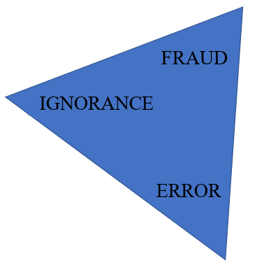
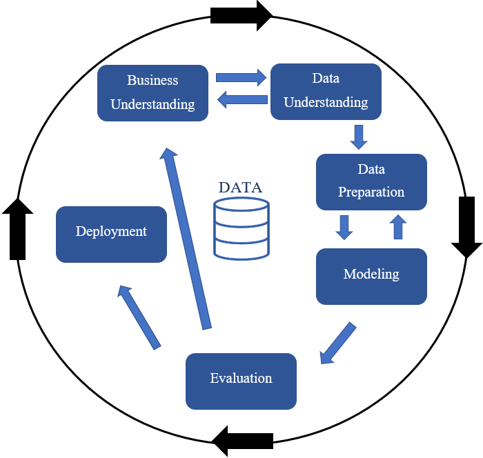

ACCT 520
Accounting Analytics for Managers
This course will attempt to focus on data fallacies. A data fallacy is defined as data used incorrectly to draw insights. Data fallacies and logical fallacies are intimately related and often one in the same.
Data Fallacy Triangle

Data fallacies are the result of ignorance, error, or fraud. Fraud is the easiest to ascribe after it is discovered. Accountants often refer to the fraud triangle: Opportunity, Incentive, and Rationalization. Ignorance and error are harder to nail down, but we will discuss all three possibilities. Fraud is perhaps the worst source of a data fallacy followed close behind by ignorance. The least egregious is error and hopefully it is the most common source of data fallacies, but I am not so sure these days. Considering the source of a data fallacy is important, but spotting the fallacy is more important. Of the three sources fraud and ignorance might cause you to be more skeptical of data that is presented if you can pick up on either of these. Unfortunately data outputs are often reports or dashboards or models and you may not be able to interact directly with the data analyst that created the output. Errors would be impossible to glean from speaking with the analyst because by definition the analyst does not know a mistake was made.Incorrect data analyses do not always lead to incorrect conclusions, but it is better to be sure than to be lucky. Luck can run out.
We cannot discuss data fallacies without understanding the stages in a data science project. The course will be organized by these stages and within each stage we will talk about each stage, do labs, and projects related to that stage. I will attempt to include the most common fallacies associated within each stage, but these fallacies can span multiple stages.. This is not a exhaustive dive into all fallacies, but it should make you aware of the most common data errors and logical errors associated with data analytics.
Stages of a Data Analytics Project

CRISP-DM
The CRoss Industry Standard Process for Data Mining (CRISP-DM) is a process model that serves as the base for a data science project. This is not the only characterization of the data science process, but most are very similar.
Business Understanding
Data Understanding
Data Preparation
Modeling
Evaluation
Deployment
Within the CRISP-DM structure there are areas that data fallacies will be more prevalent. Phases 2-5 are the data intensive parts and thus are subject to data fallacies. We will briefly discuss 1 and 6, which are arguably the most important phases. But this course will focus on common data fallacies, some logical fallacies, and some cognitive biases. The hope is that you will understand the basics of a data analytics project and that you will be able to recognize problems within a project. Ignorance is never an acceptable excuse, but we do not know what we do not know.